编辑器标签栏评审板
w00025 t03：编辑器区的标签栏与拆分。草稿在 Lab 里用真实的主题 token 与文件图标搭成，不是产品代码；拖放、右键菜单这类交互不在静态稿里，实现后在真实页面上验收。
已定的注意力排序（2026-10-15）：标签上是文件图标、文件名与状态位；关闭按钮只在活动标签与悬停的标签上显示，其余隐藏但占位；宽度随名字，过长截断；固定标签排最前、关闭位换成图钉；同名标签附灰色目录；多行默认开。
VS Code 式的活动标签 待定
按第 1 轮的答复改学 VS Code：标签条比正文低一档，活动标签是与正文同色的一块（顶部两角圆），像从正文里长出来；不加粗、不加底线。两张图都是两个编辑组，左组是活动组；左组里“第一章 雨夜”呈现为悬停。多行时活动标签不在最后一行也照样是一块（VS Code 相同）。
C 只有标签块
活动组与非活动组的活动标签都是一块，非活动组的那块文字降成次级色。分辨活动组只靠这点字色差别。
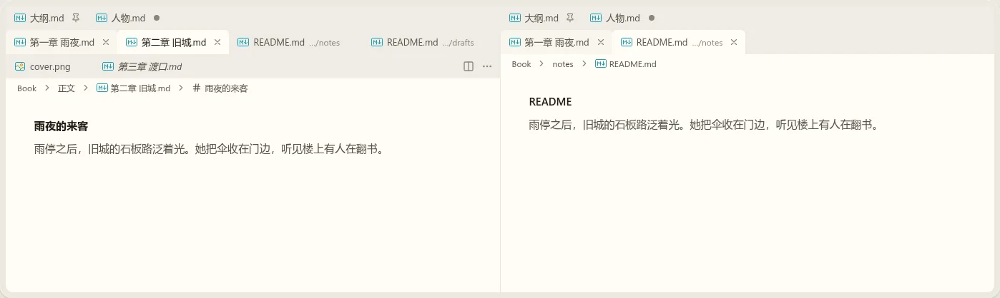
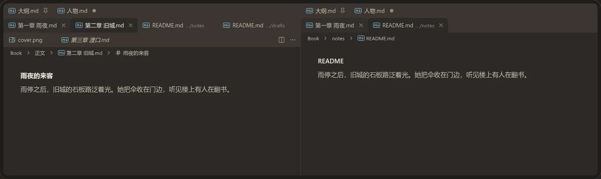
D 标签块，活动组的那块加顶部强调线
在 C 的基础上，活动组的活动标签顶部多一条 2px 强调色线（VS Code 的 tab.activeBorderTop）；别的组没有。
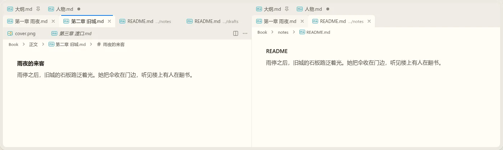
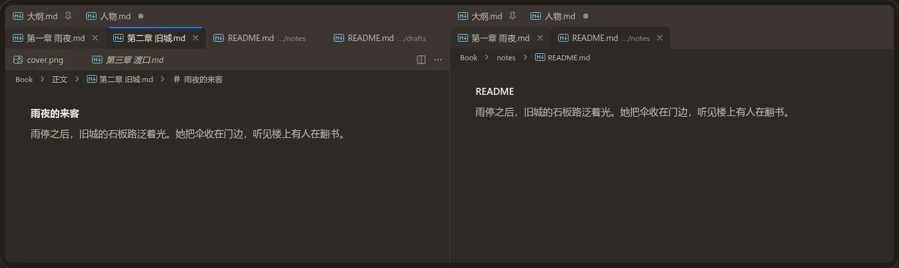
面包屑按这样做 待定
标签条下面一行：作品名 › 目录 › 文件；Markdown 文件后面再接光标所在的标题。点目录段列出它下面的文件与文件夹，点文件段列出同级，点标题段列出这一章的大纲（按标题层级缩进），选中即打开或跳到那里。面包屑默认显示，设置里可以关掉。键盘：命令“聚焦面包屑”后用 ←/→ 换段、Enter 打开下拉。
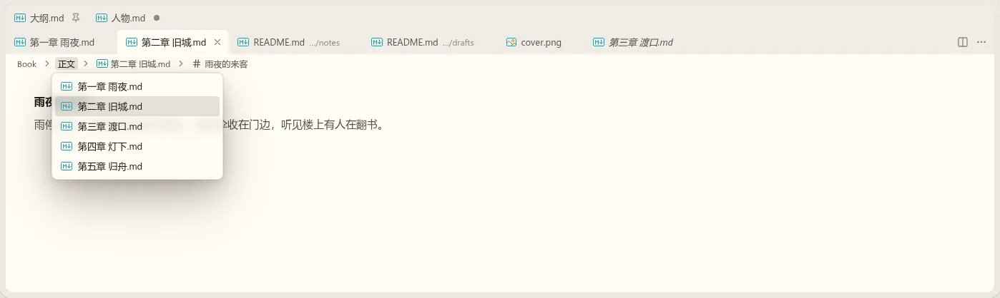
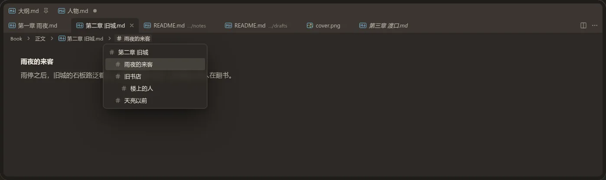
其它要改的 选答
多行时固定标签单独一行；同名附 …/目录；标题动作在最后一行右侧（多行时贴着正文）。
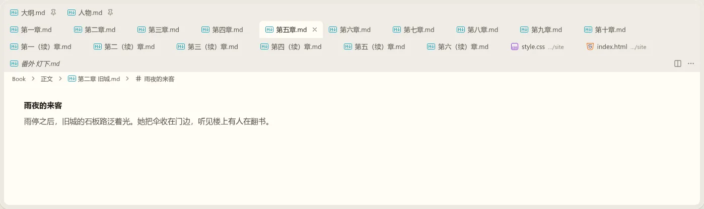
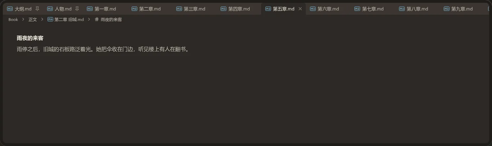
活动标签怎么突出 已定
两张图都是两个编辑组：左组是活动组，右组不是。左组里“第一章 雨夜”呈现为鼠标悬停，“第二章 旧城”是活动标签并且未保存（悬停态与活动标签显示关闭按钮，别的未保存标签显示圆点）。
A 加粗（现在的做法）
活动标签用加粗的正文色，宽度按加粗预留，切换时不跳。和侧栏、面板的标签一致（ui/workbench-shell.md 输出 38）。问题：右组的活动标签同样加粗，看标签栏分不出哪个组是活动组，只能靠右上角的标题动作只画在活动组。
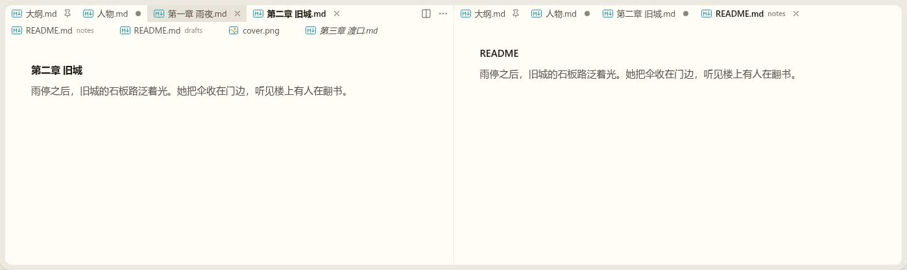
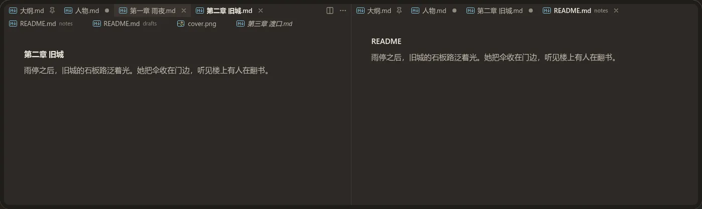
B 底部强调短线
活动标签下面一条 2px 的强调色短线，左右各缩进 8px，文字不加粗；不是活动组时短线变成弱化的灰色。活动组一眼可辨，标签宽度也不用为加粗预留。
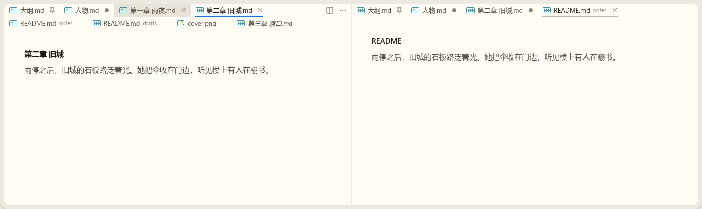
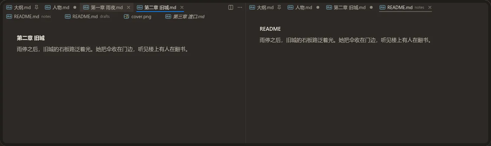
其它状态有没有要改的 已定
下面几张按已定的排序画，供核对：多行、关掉多行时的横向滚动、悬停在固定标签上。看到要改的写在这里。
| 看点 | 画法 |
|---|---|
| 固定标签 | 排最前；不悬停时关闭位是图钉，未保存时是圆点；悬停时是图钉（点它取消固定） |
| 预览标签 | 斜体（“第三章 渡口”“番外 灯下”） |
| 同名 | 两个 README.md 后面分别是灰色小字 notes、drafts |
| 多行 | 放不下时换行，标题动作留在第一行右侧 |
| 标签条与正文 | 不画分隔线，与现在一致 |
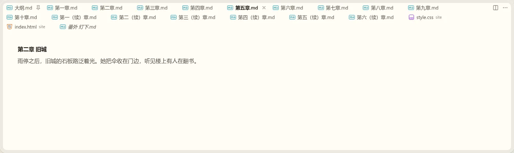
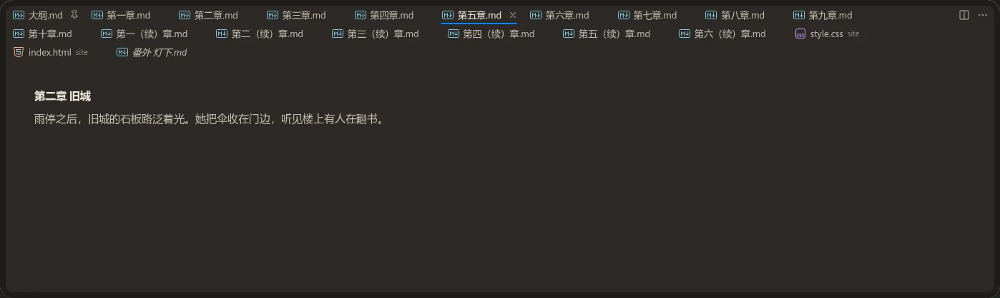
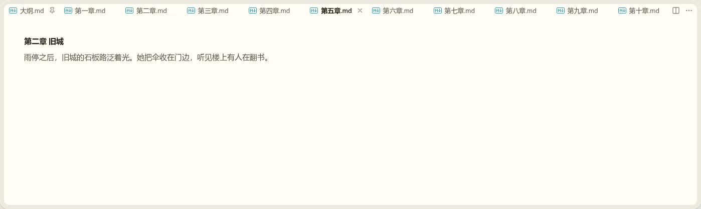
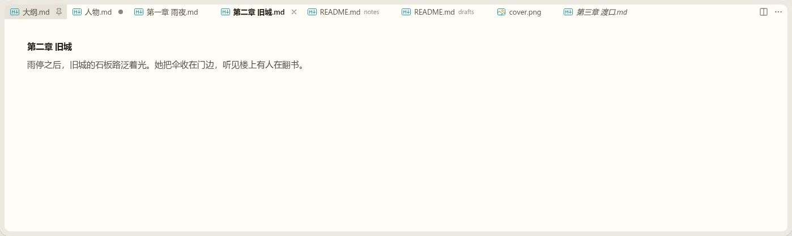